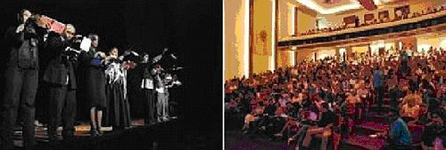

Fernando González, Velada Metafísica, se presenta a casa llena
en la Sala Máximo Avilés Blonda
Publicado en La nación dominicana.com
Santo Domingo. República Dominicana.
21 de junio de 2009.
Santo Domingo, RD.

La Sala Máximo Avilés Blonda del Palacio de Bellas Artes se llenó a toda capacidad con la presentación del grupo de Colombia, Matacandelas, con la obra Fernando González, Velada Metafísica, realización que crea la maravillosa ilusión de que el personaje principal está en su granja de Otraparte, en Envigado.
La obra se presentó durante la celebración del VI Festival Internacional de Teatro de Santo Domingo 2009, en República Dominicana, y la disfrutó un público compuesto principalmente por jóvenes y adultos que gozaron con las ocurrencias del mago de Otraparte con diversión, sátira, elementos de sensualidad, campesino, diplomático, metafísico, cascarrabias, juez y otros que crean un ambiente divertido.
El personaje principal provisto de boina y pantalones anchos tiene las más raras ocurrencias sobre la vida en sentido general, la región sudamericana, la política colombiana, el sexo, así como el comportamiento de los hombres y las mujeres de ese país.
En sus ocurrencias, plantea la historia de la humanidad hace 52 mil años en Envigado, zona colombiana, y habla de las bondades y la relación entre los olores y los amores, hasta el punto de decir que olemos todo lo que amamos.
Entre diálogos y diálogos el público disfrutó de cortos musicales en vivo producidos por los mismos actores con flauta, trombón, trompeta y bandoneón, unido esto a voces de poesía coreada, lo que imprimía dinamismo a la ejecución del drama.
Fernando, el personaje principal defendía en sus diálogos el método de enseñar a sus alumnos caminando y andando, y habla de que se pasó la vida oyéndose a sí mismo, y que su método es simplemente vivir.
El público reía y disfrutaba de la hermosa combinación y expresiones graciosas de los actores que fueron premiados por el público con sus aplausos.
En sus diálogos el personaje principal hizo un recorrido imaginario por Francia, sus encantos, sus mujeres, algunos aspectos de la vida venezolana, sus mujeres y sus costumbres.
Matacandelas: la resurrección de la palabra
Por: Ángel Mejía
En Listín Diario. Santo Domingo. República Dominicana. Junio 22 de 2009.
Santo Domingo.- En Velada metafísica, la obra de creación colectiva con la cual el grupo Matacandelas representa a Colombia en el VI Festival Internacional de Teatro de Santo Domingo, vimos ese retorno triunfal de la palabra al teatro, igual que en los viejos tiempos clásicos, isabelinos o del Siglo de Oro Español.
El de Matacandelas es un teatro que puede ser escuchado con los ojos cerrados, sin que el contenido esencial de la obra pierda nada importante, igual que en la metafísica, donde la palabra juega un papel estelar.
En esta concepción de la palabra como elemento esencial del discurso escénico, parece haber influido el carácter biográfico del argumento de la obra, estructurado a partir de textos del escritor y filósofo colombiano Fernando González, del cual se habla en la obra y la dramaturgia con textos de Félix Ángel Vallejo, Mary Jo Leavit, Gonzalo Arango y Cristóbal Peláez G.
El montaje está conformado por escenas en las que se van presentando facetas o momentos importantes en la vida del autor homenajeado y su vía crucis por la incomprensión del mundo que le tocó vivir, un mundo al que desafía de manera irreverente y del cual recibe castigos.
Aparecen amigos, biógrafos, narradores y él mismo, hablando sobre sí.
Este entrar y salir de personajes y cuadros o escenas, produce cierta monotonía casi inevitable que se refleja en el uso reiterado de los mismos planos sobre el escenario y un diseño de luz cuyos efectos no dejan espacio a la sorpresa, aunque muy efectivos en su propósito.
La configuración de caracteres en la obra pasa a un segundo plano, porque lo que parece importar en la puesta es la sonoridad vocal, casi monorrítmica e impersonal que nos comunica con el mundo del autor-personaje a través del recurso de la narración.
Al final de todo y entre canciones interpretadas en vivo por los mismos actores, el público que colmó la Sala Máximo Avilés Blonda de Bellas Artes, aplaudió de pie esta puesta del director, Cristóbal Peláez, que hace resurgir la palabra como instrumento clave del lenguaje teatral.
Su obra
Iconoclasta, inconforme, irreverente y andarín, Fernando González Ochoa fue uno de los autores más importantes de Colombia, postulado al Premio Nobel por el filósofo existencialista Jean-Paul Sartre, recibió el rechazo de la Academia Colombiana de la Lengua al mismo propósito.
Su obra, Viaje a pie, que hizo en base a notas que tomó en sus recorridos por el país, fue vetado por la Iglesia. No obstante, en 2006, el presidente Álvaro Uribe Vélez sancionó la Ley 1068, por la cual la Nación exalta la memoria, vida y obra del filósofo antioqueño Fernando González, y declaró bien de interés público y cultural de la Nación, la Casa Museo Otraparte, en Envigado, donde vivió el escritor.